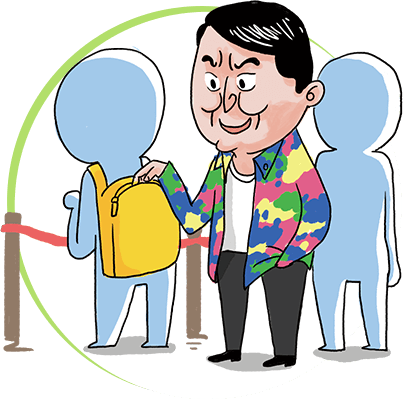

北京 （旧称紫禁城）是明、清两代皇宫的遗址。1961年，经国务院批准，被定为全国重点文物保护单位。 1987年，被联合国教科文组织列入“世界文化遗产”名录。
（旧称紫禁城）是明、清两代皇宫的遗址。1961年，经国务院批准，被定为全国重点文物保护单位。 1987年，被联合国教科文组织列入“世界文化遗产”名录。
自2011年7月2日起，博物院实行自南向北单向参观路线：午门（南门）只作为参观入口，观众一律从午门进入故宫；神武门（北门）只作为参观出口，观众参观结束后可由神武门或东华门（东门）离开故宫。
注意事项

禁止吸烟
故宫是世界上现存最大的木结构宫殿建筑群，历史上曾经多次发生火灾。每个点燃的烟头都可能是对这片珍贵历史文化遗产的威胁。故宫博物院全院禁止吸烟。您在故宫博物院内参观游览时请勿吸烟，并提醒他人不要吸烟！
保护文物古迹
参观时要注意尊重文化遗产，保护文物古迹。请不要在古建筑和古树上刻画涂写，我们一起来抵制不文明的行为！
做文明观众
为不妨碍、影响他人参观，在展厅不能使用闪光灯和三脚架拍照。在一些注明不允许拍照的展览以及特色商品店里，不应拍照，并注意服从展厅工作人员的管理。
还有就是些基本要求啦。包括
不携带宠物进院参观。不妨碍其他观众。保持衣容整洁。不要做出有碍观瞻、有损形象的行为。不随地吐痰。爱惜环境，不乱丢垃圾废物
需要提醒的是
听从疏导
博物院是公共开放场所，为确保您的人身安全，如遇人群密集时，请听从工作人员的疏导，有序参观，不要拥挤。在 开放时间即将结束时，请注意广播和工作人员的提示，尽快结束参观。

小心扒窃
在您参观时请留意自己携带的物品，提防扒窃。不要轻信和接受社会散杂人员派发的各种广告和兜售的商品。严防上当受骗，并欢迎举报。故宫派出所电话：010－85007494、85007495、65131882
寻求帮助
如果您在参观中遇到急难情况，请不要惊慌，就近寻求我院工作人员的帮助。如果您与亲友在参观中走失，可到景运门内西南侧的广播室通知他们。广播室电话：010－85007424